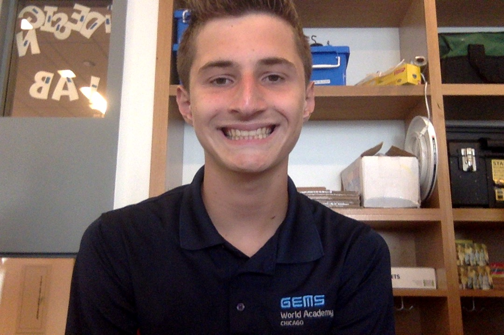

I think you should let me into your school because I am a good student and I always follow the rules the best I can. My grades at my cureent school gems world academy, are slightly above average and I always get my work in on time.I work well with others and think I would be a great contributor to your school.
Hobbies:One of my hobbies is playing video games in my spare time. One of my other hobbies is pokemon card collecting. I am an excellent swimmer and am on the Latin swim team. One thing I am espically good at is story telling. Ever since I was young I have always been good at telling stories and a second career I have secertly wanted is to make movies and tv shows. My first career choice is to be an astromener and study the vast expanse of space. As a kid I loved the planets and have always wondered whats up there and how can we get there. I also collect colletibles like pokemon cards and action figures. Drawing charaters that have been made or of my own desgin is something I do enjoy.
